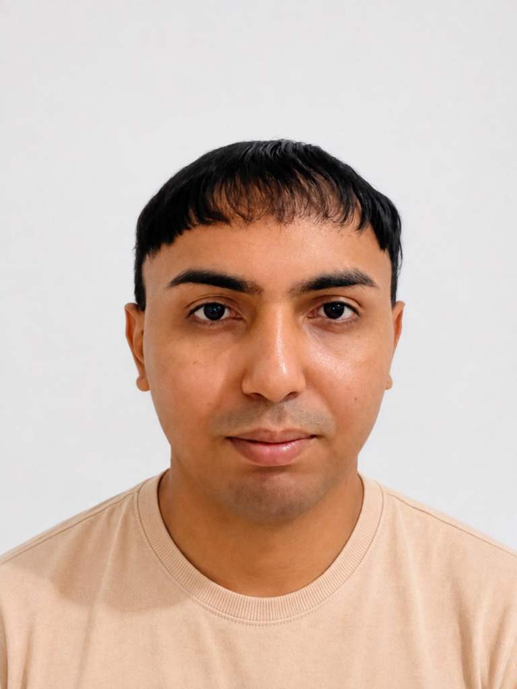

Minha trajetória
Sou graduado em Teatro pelo IFCE Fortaleza e Técnico em Informática para Internet pelo IFSMG Barbacena. Atuo como arte-educador, pesquisador de poéticas indígenas e afro-brasileiras, produtor cultural e audiovisual e agente de cultura viva.

Meus interesses
Tenho interesse em arte, cultura, tecnologia e em aprender a criar páginas para a web.